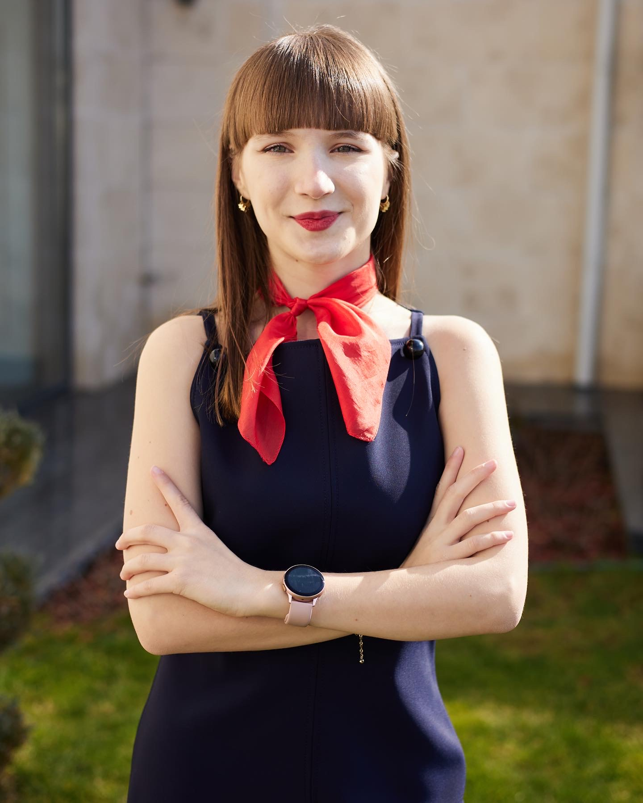

Ghinet Ioana-Teodora

Summary
I am a Computer Science student at the Technical University of Cluj-Napoca with strong skills in C++ and C, app development, and graphic design. I have excelled in national competitions, including placing 3rd in Polihack 2023, and have experience in app development using Flutter and NodeJS. Fluent in English and native in Romanian, I am passionate about software development, artificial intelligence, and creative projects.
Education
- Technical University of Cluj-Napoca -In progress
- “Gheorghe Vrănceanu” National College - 2019-2023
- Mathematics and Informatics, Intensive Informatics
Skills
- Programming Languages: C++, C
- Software & Tools: Photoshop, Lightroom, HTML, Microsoft Office, Adobe Premiere, Canva, Gmail, Mac OS
- Certifications: IC3 – Global Standard 5
- Languages: Native Romanian, Advanced English (C1 CAE), Elementary German (A1)
- Hard Skills: Programming, Graphic Design, Video Editing, Office Suite Proficiency
- Soft Skills: Teamwork, Communication, Adaptability, Creativity, Critical Thinking
- Hobbies: Technology, App and Software Development, Engineering, Artificial Intelligence, Volleyball, Piano, Singing
Experience
-
OSUT: 2023 - Present
- LEO Alpha “Young & Smart” Bacau: 2020-2021
- Ingenious Drama Festival: 2019-2020
- Organizer of the Digital Oratory Contest: 2021
- Super Film Festival: Ambassador, 2020-2022
Achievements
- Polihack Competition: 3rd Place in App Development (Flutter), 2023
- Polihack Competition: Participation, 2024
- CodeRun Competition: Participation, 2023
- County Olympiad of Informatics: Mention, 2022
- County Olympiad of Informatics: Participation, 2021
- Innovation Labs: Semifinals with ElectriGo App using NodeJS (Speaker and Developer), 2024